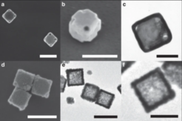
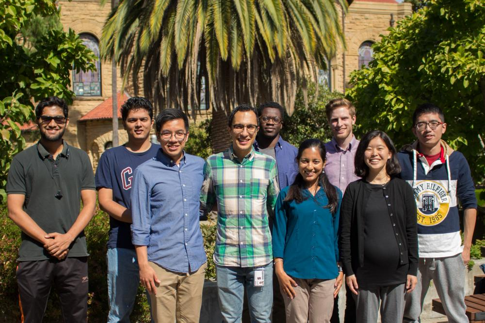

Mechanical Behavior of Nanomaterials
The Gu Group works at the intersection of solid mechanics, materials science and nano-chemistry. We study the mechanical behavior of nanoscale metals and hybrid materials, the effect of strain and crystalline defects on optical nanomaterials, and the self-assembly and 3D printing of nano-architected composites.
Featured Works
Hardening in Au-Ag nanoboxes from stacking fault-dislocation interactions
Published in Nature Communications in June 2020!
Porous, nano-architected metals with dimensions down to ~10 nm are predicted to have extraordinarily high strength and stiffness per weight, but have been challenging to fabricate and test experimentally. Here, we use colloidal synthesis to make ~140 nm length and ~15 nm wall thickness hollow Au-Ag nanoboxes with smooth and rough surfaces. In situ scanning electron microscope and transmission electron microscope testing of the smooth and rough nanoboxes show them to yield at 130 ± 45 MPa and 96 ± 31 MPa respectively, with significant strain hardening. A higher strain hardening rate is seen in rough nanoboxes than smooth nanoboxes. Finite element modeling is used to show that the structure of the nanoboxes is not responsible for the hardening behavior suggesting that material mechanisms are the source of observed hardening. Molecular dynamics simulations indicate that hardening is a result of interactions between dislocations and the associated increase in dislocation density.
 
Open Positions
We are currently looking for highly motivated students and postdocs who enjoy working in a collaborative setting to join our team. We welcome researchers with backgrounds in Mechanical Engineering, Materials Science, Chemical Engineering, Chemistry, Physics and related fields.
Students who have already been accepted to Stanford University can contact us with a CV , and a request to set up a meeting to discuss research interests. Postdocs are encouraged to contact us with a CV, and a statement of research and career goals.
Gu Group Fall 2019
